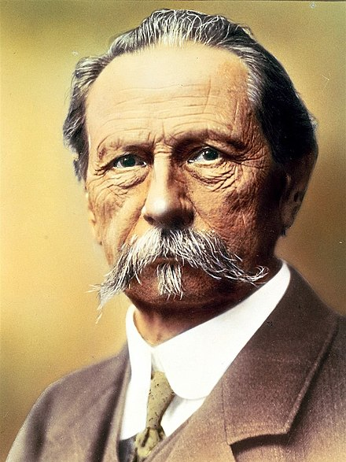
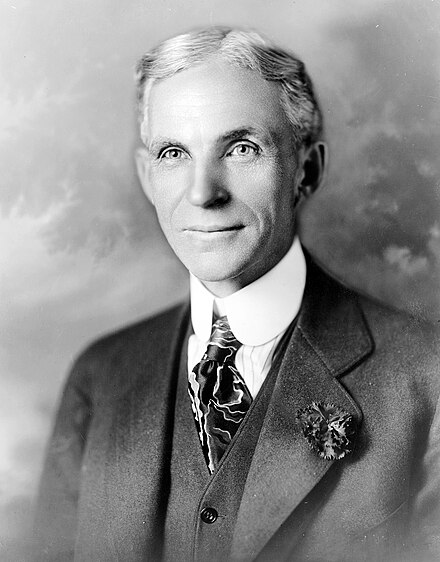
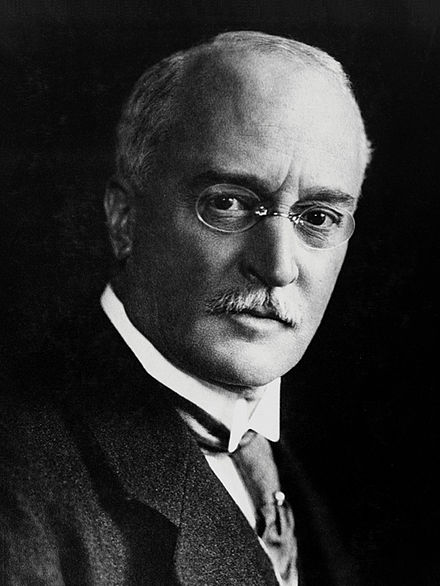
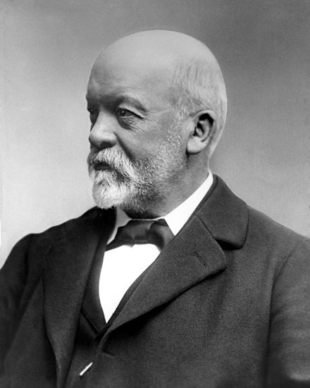

| Name |
Photo |
Age |
Details |
|
Karl Benz
|

|
84 years |
| Invention |
Year |
Description |
| Benz Patent-Motorwagen |
1885-1886 |
The Benz Patent-Motorwagen is widely regarded as the first
true gasoline-powered automobile. It featured a
single-cylinder internal combustion engine, three wheels, and
a top speed of 16 km/h (10 mph).
|
| Single-Cylinder Engine |
1879 |
Karl Benz developed a reliable, high-speed single-cylinder
internal combustion engine, which became a key component in
the Motorwagen and many other early automobiles.
|
| Wire Spark Plug |
1902 |
Karl Benz's improved spark plug design contributed to the
efficiency and reliability of internal combustion engines.
|
|
|
Henry Ford
|

|
83 |
Ford was born on a farm in Michigan's Springwells Township, leaving
home at age 16 to work in Detroit. It was a few years before this
time that Ford first experienced automobiles, and throughout the
later half of the 1880s, Ford began repairing and later constructing
engines, and through the 1890s worked with a division of Edison
Electric. He officially founded Ford Motor Company in 1903, after
prior failures in business but success in constructing automobiles.
|
|
Rudolf Diesel
|

|
55 |
-
The Diesel Engine (1892): Rudolf Diesel is best known for
inventing the diesel engine in 1892. This engine operates on the
principle of compression ignition, where high compression ratios
ignite the fuel-air mixture without the need for a spark plug.
-
Injector Nozzle: Diesel also developed the injector nozzle, a
crucial component of the diesel engine. The injector nozzle
precisely sprays and injects fuel into the combustion chamber,
enabling efficient and controlled combustion.
-
Thermodynamic Cycle: Diesel's work included the development of
the thermodynamic cycle that underpins the operation of diesel
engines. This cycle describes the processes of air compression,
fuel injection, combustion, and exhaust.
-
Other Innovations: Throughout his career, Diesel made various
contributions to engineering and thermodynamics. He continued to
refine and improve his engine design, making it more efficient
and applicable to a range of industries.
|
|
Gottlieb Daimler
|

|
65 |
Daimler and his lifelong business partner Wilhelm Maybach were two
inventors whose goal was to create small, high-speed engines to be
mounted in any kind of locomotion device. In 1883 they designed a
horizontal cylinder layout compressed charge liquid petroleum engine
that fulfilled Daimler's desire for a high speed engine which could
be throttled, making it useful in transportation applications. This
engine was called Daimler's Dream.
|
|
Wilhelm Maybach
|

|
83 |
During the 1890s he was hailed in France, then the world centre for
car production, as the "King of Designers". From the late 19th
century Wilhelm Maybach, together with Gottlieb Daimler, developed
light, high-speed internal combustion engines suitable for land,
water, and air use. These were fitted to the world's first
motorcycle, motorboat, and after Daimler's death, a new automobile
introduced in late 1902, the Mercedes model, built to the
specifications of Emil Jellinek.
|